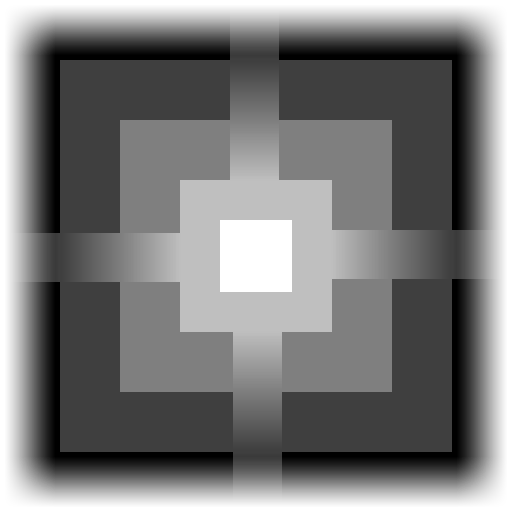

Blend Texture at Pose Heights
Overview
A Blend Texture At Pose Heights node stamps a given texture at every passed Pose. The texture defines both the height that is written into the Map and how it blends with the Input Map height. An additional offset is added according to the Pose height.

Detailed Explanation
Every Pose within the given Pose Set defines a place and rotation where to stamp the defined Texture. The Scale parameter defines the size of the stamp area (in x and z direction) centered around the Pose. The texture channels are split into two semantics, a Height semantic to define the texture's height values and a Blending semantic to define the texture's blend values according to the chosen Channel Semantics.
The Input Map is then set to the texture's height value multiplied by Scale.y. That is, if Scale.y is set to 50, the whole range of the texture's height value is remapped to values between 0 and 50 height units, i.e. [0, 50]. The Pose's y-component adds another offset to the height. For example, a Pose p1 from the Pose Set with a p1.Position.Y value of 100 lifts the range to [100, 150] while a second Pose p2 with p2.Position.Y value of -200 drops the range down to [-200, -150].
The Blending semantic eventually defines how the resulting height is lerped with the Input Map value: At places where the blend value is 0, the Input Map's height is remained while a value of 1 overwrites the Input Map value all-out. A blend value of 0.5 sets the resulting height to the exact middle height between the remapped texture sample and the Input Map's height.
The GrayScaleConversion enum defines how float values between 0 and 1 are derived from the texture for each Channel Semantic. The options to choose from are:
| Name | Description |
|---|---|
| R | The red channel of the texture. |
| G | The green channel of the texture. |
| B | The blue channel of the texture. |
| A | The alpha channel of the texture. |
| RGBAverage | The average of red, green and blue computed as (r+g+b)/3. |
| RGBToLuminance | The brightness according to the color perception of the human eye. |
| ConstantOne | The value 1 at every pixel. |
| ConstantZero | The value 0 at every pixel. |
Parameters
Inputs
| Name | Type | Description |
|---|---|---|
| Input | Map | The Map to blend with the texture stamps. |
| Pose Set | PoseSet | The initial set of poses to define place, rotation and height offset of the stamp. |
Controls
| Name | Type | Description |
|---|---|---|
| Texture | Texture | The texture to stamp at every pose. |
| Scale | Vector3 | The scale of the stamped texture. X and Z component scale the extents of the texture while the Y component scales the Height value. |
| Height | GrayScaleConversion | Defines how the Height is retrieved in the texture. |
| Blending | GrayScaleConversion | Defines how the Blending factor is retrieved in the texture. |
Use Cases
Pre-Defined Mountain Shapes
Although mountains can easily be generated with Distance Transform and Perlin Noise nodes, distinctive mountain shapes can rather be achieved by using a heightmap sample via a Blend Texture At Pose Heights node. The poses to define the place should have a sufficient distance to the road. Therefore, we move Grid Poses using Translate Along Gradient and Remove Close Neighbors of those that appear too close to each other.
Object Foundation
The same poses can be used for both spawning prefabs via a Pose Set Spawner and flattening the ground underneath using Blend Texture At Pose Heights. A foundation texture that resembles the silhouette of the prefab makes a good foundation for the object. With the pose height snapped to the height map using Set Heights By Map, it is also possible to carve plateaus into mountains - a perfect place for a fortress.